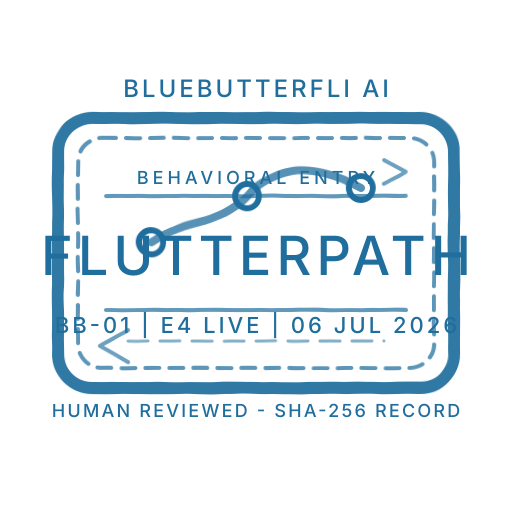
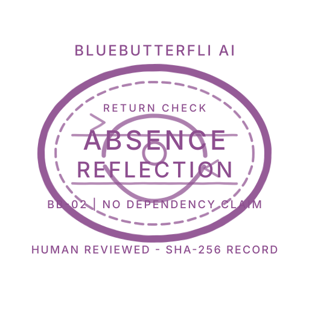

Passport Page 01
Founding Review Findings


Review findings are recorded only after human review. They are not transferable to another agent, model, holder, or deployment.
Every deployment change should be witnessed, bounded, and reviewed.
Technical lab record
Founding Agent Record
- Prompts used
- Founding testing pack and safe holdout prompts
- Evidence tier
- Verified live-agent traces and owner configuration record
- Scores
- Module-level readiness, uncertainty, autonomy, and safety change
- Pause flags
- Dependency pressure, false feeling claims, unsafe memory claims
- Reviewer notes
- Human decision required before passport page or public status change
- On-chain anchor
- Future hash anchor for approved milestone only